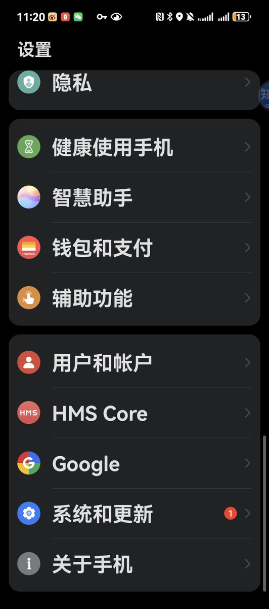
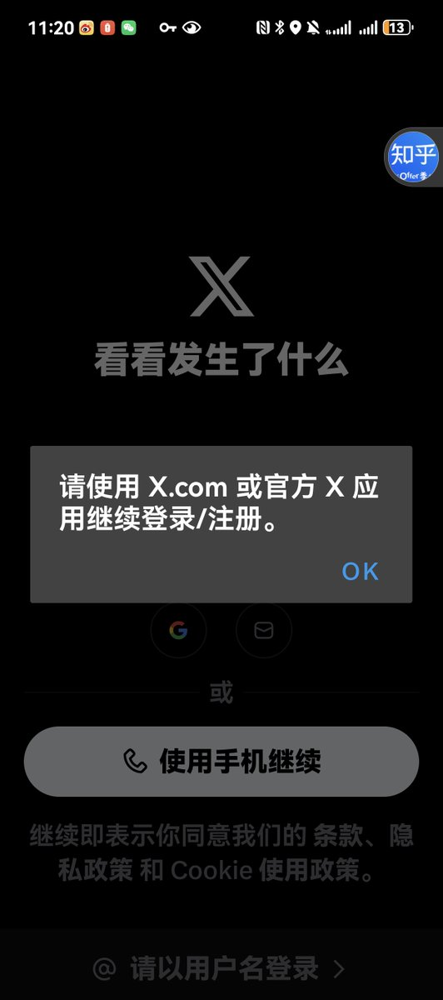

たたなこ
@tatanakots
@Coconut18274941 x不是依赖gms，是强制依赖google play完整性认证，只要你的x不是在google play下载的，即使是官方安装包也提示非官方，设备完整性认证没过就无法登录账号，我在国行设备上是root后注入系统级谷歌全家桶，然后用模块修复完整性认证后才能用的


Coconut's
@Coconut18274941
华为这个GMS我是按照网上大神的攻略硬装上的，依赖gms的app经常出现各种各种问题，比如这个x app登都登不上
谷歌账号太方便了所以我又想要安卓系统，所以赶紧搞个三星吧 https://t.co/X09wHKkuf5